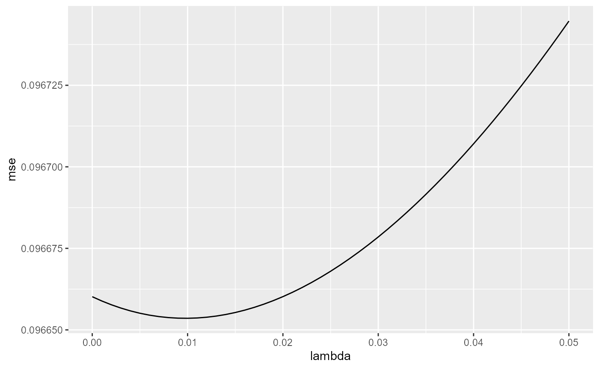

homework-2.Rmd
library(bis557)
#> Loading required package: rsample
#> Loading required package: foreach
#> Loading required package: tibble
#> Loading required package: ggplot2
#> Loading required package: purrr
#>
#> Attaching package: 'purrr'
#> The following objects are masked from 'package:foreach':
#>
#> accumulate, when
#> Loading required package: glmnet
#> Loading required package: Matrix
#> Loaded glmnet 4.0-2This is the 2nd homework of Yale course bis557 (due October 7th).
For OLS, we know that \(\hat \beta = (X^TX)^{-1}X^TY\).
Rewrite \(y=\beta_0 + \beta_1x\) as \(Y=X\beta\), where
$$ Y =
X =
= $$ Then we can calculate \(\hat \beta\):
$$ X^TX =
=
\
(XTX){-1} =
$$ Let \(\alpha\) represent \(\frac{1}{n\sum{x_i^2}-(\sum{x_i})^2}\),
$$ \[\begin{aligned} (X^TX)^{-1}X^T &= \alpha \left[ \begin{matrix} \sum{x_i^2} & -\sum{x_i} \\ -\sum{x_i} & n \end{matrix} \right] \left[ \begin{matrix} 1 & \cdots &1 \\ x_1 & \cdots & x_n \end{matrix} \right] \\ &= \alpha \left[ \begin{matrix} \sum{x_i^2}-(\sum{x_i})x_1 & \cdots & \sum{x_i^2}-(\sum{x_i})x_n \\ -\sum{x_i}+nx_1 & \cdots & -\sum{x_i}+nx_n \end{matrix} \right] \end{aligned}\]$$
$$ \[\begin{aligned} \beta &= (X^TX)^{-1}X^TY = \alpha \left[ \begin{matrix} \sum{x_i^2}-(\sum{x_i})x_1 & \cdots & \sum{x_i^2}-(\sum{x_i})x_n \\ -\sum{x_i}+nx_1 & \cdots & -\sum{x_i}+nx_n \end{matrix} \right] \left[ \begin{matrix} y_1 \\ y_2 \\ \cdots \\ y_n \\ \end{matrix} \right] \\ &= \frac{1}{n\sum{x_i^2}-(\sum{x_i})^2} \left[ \begin{matrix} \sum{x_i^2}\sum{y_i}-\sum{x_i y_i}\sum{x_i} \\ -\sum{x_i} \sum{y_i} + n \sum{x_i y_i} \end{matrix} \right] \end{aligned}\]$$
data("iris")
gd <- gradient_descent_new(Sepal.Length ~ ., iris)$coefficients
lm <- lm(Sepal.Length ~ ., iris)$coefficients
compare <- as.data.frame(cbind(gd, lm))
colnames(compare) <- c("gradient descent", "OLS")
compare
#> gradient descent OLS
#> (Intercept) 2.1384403 2.1712663
#> Sepal.Width 0.5385547 0.4958889
#> Petal.Length 0.7284067 0.8292439
#> Petal.Width -0.1674897 -0.3151552
#> Speciesversicolor -0.5798320 -0.7235620
#> Speciesvirginica -0.8444013 -1.0234978
data("iris")
# create a colinear term
iris$colinear <- 2*iris$Petal.Width
# run the ridge regression function - it works without error
ridge_regression(Sepal.Length ~ ., iris, lambda = 0.1)
#> $coef
#> [,1]
#> [1,] 1.97828825
#> [2,] 0.56143280
#> [3,] 0.81285869
#> [4,] -0.07478851
#> [5,] -0.56326076
#> [6,] -0.81374572
#> [7,] -0.14957702
#>
#> $form
#> Sepal.Length ~ .
#>
#> attr(,"class")
#> [1] "ridge_regression"
data("iris")
# run the ridge regression function with cross validation
cv_ridge(form = Sepal.Length ~ ., d=iris, lambda = seq(0, 0.05 ,0.001))
#> $lambda
#> [1] 0.01
#>
#> $plot
#>
#> attr(,"class")
#> [1] "cv_ridge"The best lambda is 0.01.
\[ f(\beta)=\frac{1}{2 n} \sum_{i=1}^{n}\left(y_{i}-\sum_{j=1}^{p} x_{i j} \beta_{j}\right)^{2}+\lambda \sum_{j=1}^{p}|\beta_{j}| \] $$ = - ^n {i=1}x{il}(y_i - y ^{(l)}) +^n {i=1} x{il} +
$$
\[ \tilde{\beta}_l = \frac{1}{n} \sum^n_{i=1} x_{il} (y_i -\tilde{y}^{(l)}) - \lambda \]
Rewrite into matrix notation:
\[ \tilde{\beta}_l = \frac{1}{n} X^T_j Y - \lambda \] If \(|X^T_j| \le n\lambda\), then \(\frac{1}{n} X^T_j Y - \lambda \le 0\), which means \(\tilde \beta_l \le 0\). In Lasso, coefficient shrink to 0 when the absolutevalue of that least squares coefficient is less than \(\lambda/2\). Therefore, when \(\tilde \beta_l \le 0\), \(\tilde \beta_l\) must be set to \(0\).